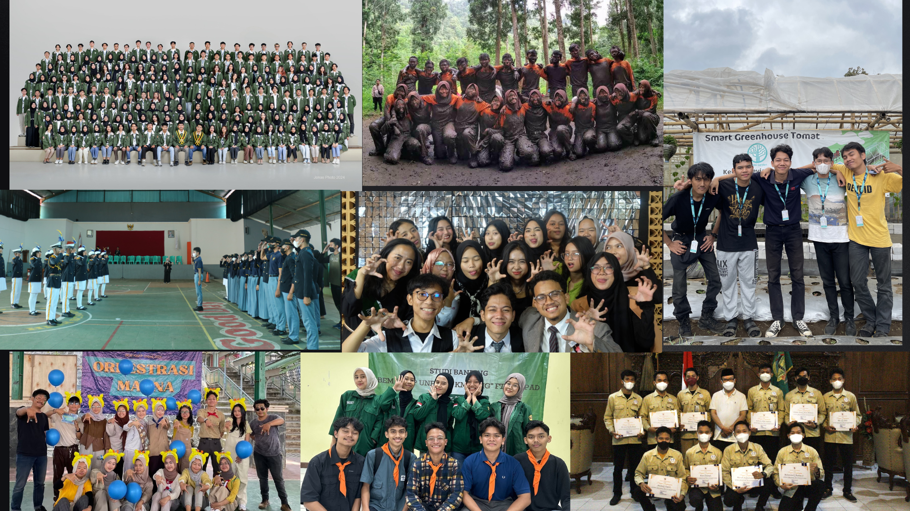
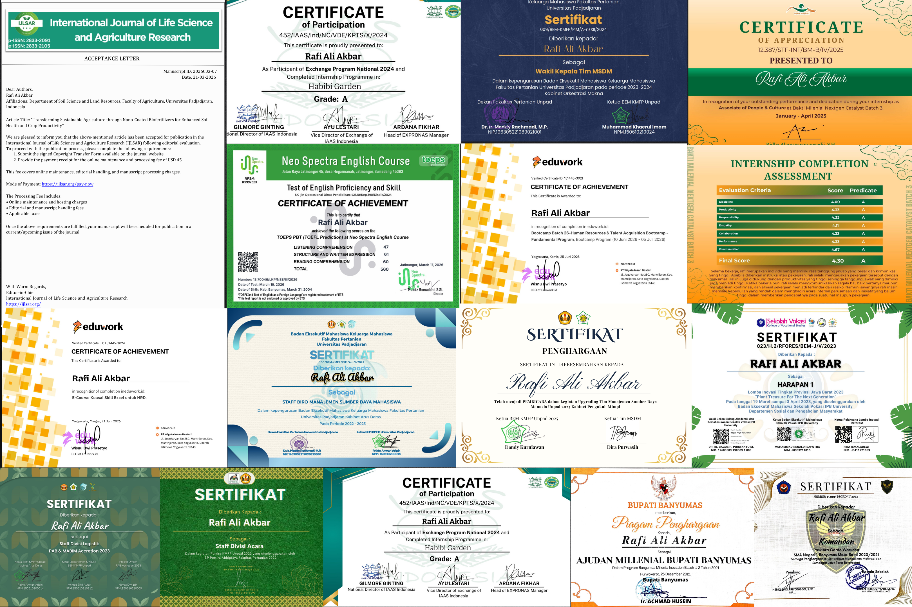
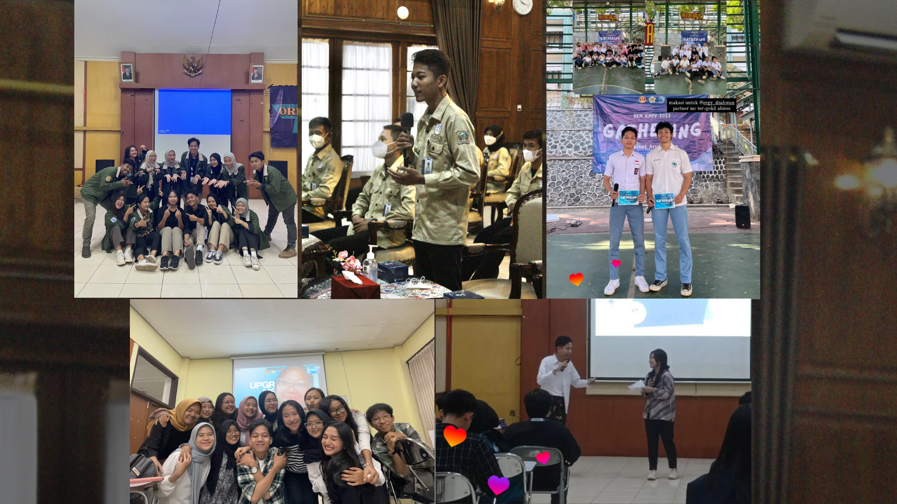

Fresh graduate in Agrotechnology from Universitas Padjadjaran (GPA 3.76/4.00) with hands-on experience across recruitment, workforce planning, and people development — assessing 300+ candidates, coordinating hiring for 17 positions, and leading HR initiatives that reached 200+ members.
Candidates Assessed
Positions Recruited
Members Mentored
Human Resources · People & Culture · Talent Acquisition
About
My work sits at the intersection of people and process: interviewing and assessing candidates, translating workforce needs into structured hiring plans, and mentoring teams through their own performance cycles. Across four organizational leadership roles and two professional placements, I've learned that good HR outcomes come from disciplined systems, not improvisation.
My academic background in Agrotechnology adds a distinct edge — comfort with data, fieldwork rigor, and cross-functional operations that translates directly to FMCG and consulting environments where HR and business operations meet.
Career
Placements in recruitment, laboratory operations, agronomy, and public-sector coordination — each contributing a different discipline to how I approach people and process.
Bakti Milenial Foundation · Remote
CV. Bintang Asri Arthauli · Bandung, Jawa Barat
PT Habibi Digital Nusantara · Bandung, Jawa Barat
Banyumas Regent Office · Banyumas, Jawa Tengah
Leadership
Five years of consecutive leadership roles in human resource management, logistics, and event coordination — the throughline is structured people management.
BEM KMFP Universitas Padjadjaran
BEM KMFP Universitas Padjadjaran
PAB Acretion, Universitas Padjadjaran
Coordinated logistics planning, procurement, and distribution across 3+ event stages, resolving on-site issues to support smooth execution.
Pemira KMFP, Universitas Padjadjaran
Supported 3+ election stages — campaign, debate, and voting — maintaining operational timelines for organized, efficient implementation.
Paskibra SMAN 1 Banyumas
Recognition
Certifications, published research, and recognitions earned alongside professional and organizational work.
HR & Talent Acquisition Bootcamp
Eduwork · 2026
Recruitment & Selection, HRBP, HRIS, KPI–OKR, Talent Management, SOP Development.
Microsoft Excel for Human Resources
Eduwork · 2026
HR Analytics, Pivot Tables, Dashboards, HR Metrics, Data Visualization.
TOEPS PBT (TOEFL Prediction)
2026
Score: 560
First Author, International Journal (IJLSAR)
2026
Peer-reviewed review article on nano-coated biofertilizers for sustainable agriculture.
Co-Author, International Journal (ARJA)
2026
Peer-reviewed review article on beneficial microbes for soil health and crop productivity.
PCMK Scholarship Awardee
2025
Selected based on academic performance and organizational involvement.
Guest Speaker, HRM Upgrading Program
BEM KMFP Unpad · 2025
Invited speaker on Human Resource Management development.
1st Runner-Up, Innovation Competition
BEM SV IPB University · 2023
"Plant Treasure For Next Generation" reforestation infographic — West Java provincial level.
Best Staff of the Month, HRM
BEM KMFP Unpad · 2023
Awarded for the April 2023 period.
Capabilities
Core competencies developed through recruitment work and organizational leadership, supported by day-to-day productivity tools.
Recruitment & Selection
Candidate screening & evaluation
Workforce Planning
Job analysis & manpower planning
Leadership & Mentoring
Team supervision & development
Stakeholder Management
Cross-functional coordination
HR Data & Reporting
Metrics, dashboards, KPI tracking
Public Speaking
Presentations & facilitation
Microsoft Excel
HR analytics & reporting
Microsoft Word
Documentation
Google Workspace
Sheets, Docs & collaboration
Canva
Presentation & visual design
Microsoft Teams
Virtual meetings & communication
In the Field



Let's Connect
Open to opportunities in Human Resources, People & Culture, Talent Acquisition, and Management Trainee programs.
Professionalism and accountability in every commitment.
Building alignment across teams and stakeholders.
Continuous learning applied to people and process.